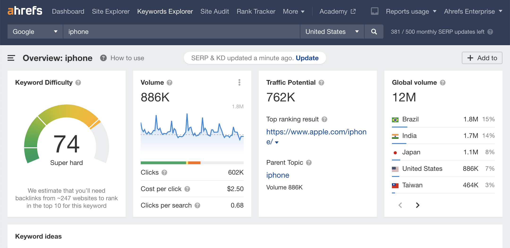

Business: UrbanFit Apparel | Industry: E-commerce Fitness Clothing
Goal: Scaling Online Sales Using Paid Social Advertising
UrbanFit Apparel had a strong product line but struggled to generate consistent online sales. Their social media had engagement but low conversion rates and minimal paid advertising strategy.
Digital Marketing Specialist responsible for planning, launching, and optimizing paid social campaigns to increase conversions and revenue.


Campaign Strategy: I designed a full funnel Meta advertising strategy targeting fitness enthusiasts and gym-goers. The strategy included Awareness campaigns targeting interest groups (fitness, gym, yoga), Retargeting website visitors and social engagers, Conversion campaigns optimized for purchases, and Lookalike audiences based on engaged users.
Tools Used: Meta Ads Manager, Canva, Google Analytics 4, Meta Pixel, Google Tag Manager.
Campaign Setup Steps: Installed Meta Pixel and verified tracking through GTM. Conducted audience research for high-intent segments. Designed ad creatives focusing on product lifestyle imagery. Built a three-stage funnel: Awareness, Consideration, and Conversion ads. Implemented retargeting campaigns for website visitors.
Results: Within 6 weeks: 215 online purchases, 3.4x ROAS, 42% increase in website sales.
Skills Demonstrated: Paid social advertising, Audience segmentation, Conversion tracking, A/B testing, Performance optimization.
Business: GreenLeaf Cafe | Industry: Local Restaurant / Coffee Shop
Goal: Increasing Organic Traffic Through SEO Optimization
GreenLeaf Cafe had a website but low organic visibility and minimal search traffic, making it difficult for potential customers to discover the business online.
SEO strategist responsible for improving search rankings and increasing organic website traffic.



Campaign Strategy: Implemented a local SEO and content marketing strategy focused on Keyword optimization, Blog content creation, Technical SEO improvements, and Google Business Profile optimization.
Tools Used: Google Search Console, Ahrefs, SEMrush, Google Analytics 4, Yoast SEO.
Campaign Setup Steps: Conducted keyword research for local search queries. Optimized website meta titles and descriptions. Created SEO blog content targeting high-intent keywords. Improved website loading speed and technical SEO. Built backlinks through local directories and guest posts. Optimized Google Business Profile.
Results: 608% increase in organic traffic, Top 3 ranking for multiple local keywords, and increased foot traffic to the cafe.
Skills Demonstrated: Keyword research, On-page SEO, Technical SEO, Local SEO, Content strategy.
Business: SkillUp Academy | Industry: Online Education
Goal: Lead Nurturing Campaign for Online Course Platform
SkillUp Academy generated leads through their website but many leads did not convert into paying students.
Email marketing specialist responsible for creating automated email sequences to convert leads into customers.


Campaign Strategy: Designed a 5 email automated lead nurturing funnel including Welcome email, Educational value emails, Social proof, and Limited time offers.
Tools Used: Mailchimp, HubSpot CRM, Canva, Google Analytics.
Campaign Setup Steps: Segmented email list by user behavior. Designed automated email workflow. Created educational email content about course benefits. Implemented A/B testing on subject lines. Monitored campaign performance and optimized emails.
Results: 5.8% conversion rate from email leads and 320 new course enrollments.
Skills Demonstrated: Email automation, Lead nurturing, Conversion optimization, A/B testing, Email analytics.
Business: FitLife Wellness | Industry: Fitness & Lifestyle Brand
Goal: Growing Brand Awareness Through Social Media Strategy
FitLife had social media accounts but low engagement and slow follower growth.
Social media strategist responsible for building a content strategy to increase engagement and brand awareness.

Campaign Strategy: Implemented a content driven Instagram growth strategy focusing on Short form video (Reels), Fitness tips and educational content, Influencer collaborations, and a Consistent posting schedule.
Tools Used: Instagram Insights, Canva, Hootsuite, Later, Google Analytics.
Campaign Setup Steps: Conducted competitor and audience research. Developed a monthly content calendar. Created engaging fitness tip videos. Partnered with micro-influencers. Monitored engagement metrics and optimized content.
Results: 650% increase in followers and significant improvement in brand awareness.
Skills Demonstrated: Social media strategy, Content marketing, Influencer marketing, Social analytics, Community engagement.
Business: CloudFlow SaaS | Industry: Software as a Service
Goal: Optimizing Conversion Tracking and Marketing Performance
CloudFlow was running multiple marketing campaigns but lacked proper tracking and performance visibility.
Marketing analytics specialist responsible for implementing accurate tracking and performance dashboards.


Campaign Strategy: Developed a complete analytics and tracking framework using GA4 and Google Tag Manager.
Tools Used: Google Analytics 4, Google Tag Manager, Google Data Studio, Meta Pixel, Google Ads.
Campaign Setup Steps: Implemented GA4 tracking on the website. Set up key conversion events. Installed marketing pixels using Google Tag Manager. Built marketing dashboards using Data Studio. Connected Google Ads and Meta Ads to analytics tools.
Results: Improved campaign tracking accuracy, 28% reduction in cost per acquisition, and enabled data-driven marketing decisions.
Skills Demonstrated: Marketing analytics, Conversion tracking, Data visualization, Marketing attribution, Performance optimization.